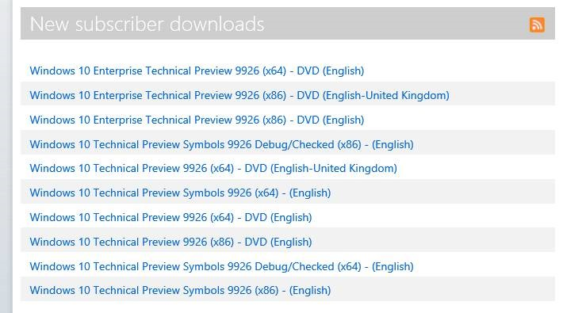

Windows 10 Preview–January Build Now Available (9926)
Microsoft has just released latest preview build for Windows 10 which is known as the January Build or Technical Preview 2. This release contains build version 9926. Latest build comes with Cortana and XBOX features which were demonstrated few days back at the Public event held by Microsoft.
In order to obtain this build, you need to either be a Windows Insider (join for free https://insider.windows.com) or it’s possible to download from MSDN Subscription.
Download Windows 10 Preview using Windows Insiders Program
http://windows.microsoft.com/en-us/windows/preview-iso
Following downloads are available for me within my MSDN Subscription

Official Announcement from Microsoft
Please note that there’s already list of identified known issues within Windows 10 Technical Preview.
- After installing this build, you may see a boot selection menu each time you reboot your PC. This is because a bug where a second boot option is persisted to uninstall the Windows 10 Technical Preview and roll back to the previous OS installed. When you get to this screen, if you do nothing it will automatically boot to the Windows 10 Technical Preview within 30 seconds by default or you can choose it on your own. Don’t worry, this behavior is only temporary.
- Xbox Live enabled games that require sign-in will not launch correctly. If you see the below dialog box the game requires Xbox Live sign-in. A fix for this will be distributed via WU shortly after the release of Build 9926.
- Battery icon shows on lock screen of PCs without batteries.
- Tiles on the Start menu show truncated app names (such as the Windows Feedback app).
- Remote Desktop has some painting issues that result in tiled pixelation.
- Connected Standby enabled devices like Surface Pro 3 may experience shorter than expected battery life.
- In Cortana, reminders can’t be edited and more complex reminders might not get created. The first reminder you create in Cortana in this build might not pop up, but subsequent ones will. Completed reminders also don’t move to the History page in Cortana’s Notebook.
- The Music app will disappear if minimized within 16 seconds of launch. Just leave it in the foreground for 20 seconds or so and it should work just fine.
- Occasionally, the Start Menu is improperly registered and will fail to launch.
There’s also an update released to fix some of the issues in the current preview build. Once installation completes, make sure that you go ahead and do a windows update scan to obtain latest hotfixes. Following issues were fixed by Microsoft by releasing an update.
- Reliability improvements to prevent some system crashes in explorer.exe
- Fixes an issue that could cause a deleted app to be unintentionally reinstalled
- Increased power efficiency to extend battery life
- Reliability improvements for virtual machine live migrations
- Performance improvements for Internet Explorer
- Fixes an issue that could cause pending Windows Updates to be incorrectly reported in the update history
- Fixes an issue that could cause the Start Menu to be improperly registered and fail to launch
- Fixes an issue that could cause random pixelation on the screen when using Remote Desktop Client
Once my download finishes, I will post back with more details and my experience on Windows 10 Preview